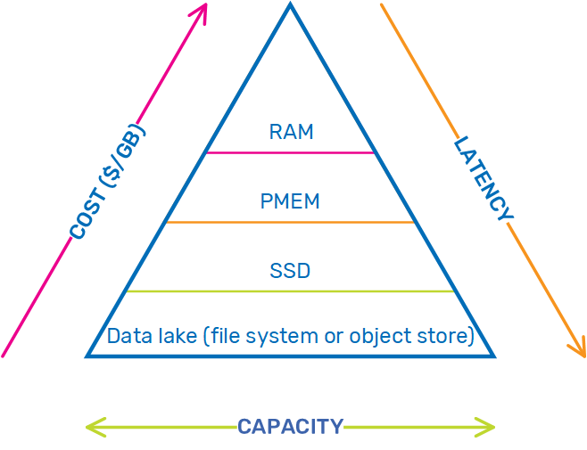

Indexing is an effective way to improve query performance on regular databases. However, organizations can store up to terabytes and petabytes of data in data lakes. Indexing all of the data is impractical because it results in very high overhead; while indexing might improve performance, it isn't cost effective because of the storage required to support an index of that size.
AnalyticsXtreme provides intelligent data tiering with its batch indexing feature, which enables differentiating between older (cold) data that is still frequently accessed, and data that can be archived because it is only relevant for historical purposes. This keeps the size of the index small while still providing high performance.
Using batch indexing, you can create a full data life cycle policy that automatically tiers your aging data into cold and archive storage in your data lake, to complement AnalyticsXtreme's handling of hot data (stored in RAM) and warm data (stored in SSD) that is ingested in automatic data tiering mode. This end-to-end approach optimizes your data storage, so you can maintain the right balance between performance and cost as capacity increases and your data moves between the frequent access and infrequent access tiers.

Batch indexing, which supports all AnalyticsXtreme functionality, uses partitions and buckets to categorize data in the file system or object store, so you can designate a specific location for each type of data. For example, you might partition your data according to city, but then want to query using SQL, JDBC, or Spark by customer name. In order to successfully query this, you must map the names to the cities.
When the batch index is deployed,
The basic AnalyticsXtreme data life cycle from speed (hot) to batch (cold) is detailed in the
As data moves from the speed layer to the batch layer, it is added to the batch index when it moves through the speed layer eviction time window (buffer). As the data moves into the batch layer, it is directed to the relevant partitions and buckets. At this point, the data is still available for frequent access.
As the batch layer time window expires, the data moves into the batch index eviction time window. When this time window expires, the data is expunged from the index and is available only as archived data.
The batch index is stored in a separate Space, which maintains a mapping of the batch index values to the partition values. This Space is accessed internally via the
By default, the index is deployed using the MemoryXtend driver for SSD.
When a query is executed in the AnalyticsXtreme client,
If either of the above verifications fail, the index isn't used. If the query matches the defined index period, the query runs using the index and only the relevant partitions are returned (those with data that match the query). The original query from the client is then updated with the partition condition.
If the query only applies to a subset of the batch index period, then only the relevant time slices are retrieved. For example, the client may need to find a customer in the database. If the query is associated with only three time slices within the batch index period, then it only retrieves those three slices from the batch index period; this speeds up the query considerably.
The AnalyticsXtreme batch indexing feature supports multiple indexes (defining an index on more than one column of the data) and multiple partitions (data tables that are partitioned by multiple columns) are supported. ORDERED index type is also supported.
The batch index period is the entire amount of cold data in the batch layer that is indexed. For example, if you want to index one month out of a full year of data, then one month is the batch index period. The month needs to be further segmented into time slices (this is the index granularity). The more granular the time slices, the larger the index becomes in the dedicated Space (which resides on SSD), but this also results in greater accuracy and faster performance. The longer the time slice the less granular the indexing, so the query must scan larger chunks of data but the memory footprint is smaller.
In essence, you must balance your need for faster performance vs. storage costs when defining the granularity of the time slices.
The batch index policy contains the following parameters.
| Parameter | Description | Unit | Default Value | Required |
|---|---|---|---|---|
| columnName | Column on which the index is defined. | Text | Yes | |
| period | Length of the batch index period. | See |
Java time format (see the Java API documentation) | Yes |
| granularity | Length of the time slice within the batch index period. | See |
Java time format (see the Java API documentation) | Yes |
| ordered | Defines whether this is an ORDERED index type. | True/False | False | No |
In the following example there is a table called Person in Hive that is partitioned by columns country and city.
@SpaceClass
public class Person {
private Integer id;
private Timestamp joinDate;
private String name;
private String country;
private String city;
private Integer age;
private Integer salary;We can define a batch index on the Name column, where the batch index period is 5 hours, with 30-minute time slices (the granularity). The BatchIndexPolicy is defined as follows:
<bean id="basicIndexPolicy" class="com.gigaspaces.analytics_xtreme.batch_index.BatchIndexPolicyFactoryBean">
<property name="columnName" value="name"/>
<property name="period" value="pt5h"/>
<property name="granularity" value="pt30m"/>
<property name="ordered" value="false"/>
</bean>An ordered batch index can also be defined on the Age column, where the batch index period is 5 hours and the granularity is 1-hour time slices. The BatchIndexPolicy is then defined as follows:
<bean id="rangeIndexPolicy" class="com.gigaspaces.analytics_xtreme.batch_index.BatchIndexPolicyFactoryBean">
<property name="columnName" value="age"/>
<property name="period" value="pt5h"/>
<property name="granularity" value="pt1h"/>
<property name="ordered" value="true"/>
</bean>In order to know when data moves from the speed layer to the batch layer (and is therefore indexed), the data life cycle must be defined in the DataLifeCyclePolicy bean:
<bean id="partitionedDataLifecyclePolicy" class="com.gigaspaces.analytics_xtreme.DataLifecyclePolicyFactoryBean">
<property name="typeName" value="model.Person"/>
<property name="speedPeriod" value="pt5h"/>
<property name="timeColumn" value="joinDate"/>
<property name="batchDataSource" ref="ax-datasource"/>
<property name="batchDataTarget" ref="ax-datatarget"/>
<property name="mutabilityPeriod" value="pt4h50m"/>
<property name="batchFeedInterval" value="pt60s"/>
<property name="evictionPollingInterval" value="pt10m"/>
<property name="evictionBuffer" value="pt10m"/>
<property name="timeFormat" value="yyyy-MM-dd HH:mm:ss"/>
<property name="batchIndexSpaceName" value="batchIndex"/>
<property name="batchIndexPolicies">
<list>
<ref bean="basicIndexPolicy"/>
<ref bean="rangeIndexPolicy"/>
</list>
</property>
</bean>In order to define a query to run on the data, we can assume that today's date is 2019-10-01 17:00, and that the batch layer contains the following data entries.
| ID | Name | Country | City | Age | Salary | JoinDate |
|---|---|---|---|---|---|---|
| 1 | John | England | London | 22 | 7000 | 2019-10-01 09:05 |
| 2 | John | England | Brighton | 45 | 12000 | 2019-10-01 09:40 |
| 3 | David | France | Paris | 30 | 9500 | 2019-10-01 11:05 |
| 4 | William | France | Marseille | 30 | 5550 | 2019-10-01 11:33 |
The index for the Name column is:
| Index Value | Time Slice | Partitions |
|---|---|---|
| John | 2019-10-01 09:00 | (England,London) , (England,Brighton) |
| David | 2019-10-01 11:00 | (France,Paris) |
| William | 2019-10-01 11:00 | (France,Marseille) |
The index for the Age column is:
| Index Value | Time Slice | Partitions |
|---|---|---|
| 22 | 2019-10-01 09:00 | (England,London) |
| 45 | 2019-10-01 09:30 | (England,Brighton) |
| 30 | 2019-10-01 11:00 | (France,Paris) |
| 2019-10-01 11:30 | (France,Marseille) |
First we can run the following query:
SELECT * FROM Person WHERE name = ‘John’ AND joinDate > 2019-10-01 07:00
SELECT * FROM Person WHERE (name = ‘John’ AND ((country = ‘England’ AND city = ‘London’) OR (country = ‘England’ AND city = ‘Brighton’)) AND joinDate > 2019-10-01 03:00
The following results are returned:
| ID | Name | Country | City | Age | Salary | JoinDate |
|---|---|---|---|---|---|---|
| 1 | John | England | London | 22 | 7000 | 2019-10-01 09:05 |
| 2 | John | England | Brighton | 45 | 12000 | 2019-10-01 09:40 |
Next, we can run another query:
SELECT * FROM Person WHERE age > 25 AND joinDate > 2019-10-01 07:00
SELECT * FROM Person WHERE (age > 25 AND ((country = ‘England’ AND city = ‘Brighton’) OR (country = ‘France’ AND city = ‘Paris’) OR (country = ‘France’ AND city = ‘Marseille’)) AND joinDate > 2019-10-01 07:00
The following results are returned:
| ID | Name | Country | City | Age | Salary | JoinDate |
|---|---|---|---|---|---|---|
| 2 | John | England | Brighton | 45 | 12000 | 2019-10-01 09:40 |
| 3 | David | France | Paris | 30 | 9500 | 2019-10-01 11:05 |
| 4 | William | France | Marseille | 30 | 5550 | 2019-10-01 11:33 |
AnalyticsXtreme batch indexing has the following limitations: